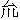
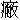

世事翻騰似轉輪，眼前凶吉未為真。
請看久久分明應，天道何曾負善人。
聞得老郎們相傳的說話，不記得何州甚縣，單說有一人，姓金名孝，年長未娶。家中只有個老母，自家賣油為生。一日挑了油擔出門，中途因裡急，走上茅廁大解，拾得一個布裹肚，內有一包銀子，約莫有三十兩。金孝不勝歡喜，便轉擔回家，對老娘說道：「我今日造化，拾得許多銀子。」老娘看見，倒吃了一驚，道：「你莫非做下歹事偷來的麼？」金孝道：「我幾曾偷慣了別人的東西？卻恁般說！早是鄰舍不曾聽得哩。這裹肚，其實不知什麼人遺失在茅坑旁邊，喜得我先看見了，拾取回來。我們做窮經紀的人，容易得這主大財？明日燒個利市，把來做販油的本錢，不強似賒別人的油賣？」老娘道：「我兒，常言道：『貧富皆由命。』你若命該享用，不生在挑油擔的人家來了。依我看來，這銀子雖非是你設心謀來的，也不是你辛苦掙來的，只怕無功受祿，反受其殃。這銀子，不知是本地人的，遠方客人的？又不知是自家的，或是借貸來的？一時間失脫了，抓尋不見，這一場煩惱非小。連性命都失圖了，也不可知。曾聞古人裴度還帶積德，你今日原到拾銀之處，看有甚人來尋，便引來還他原物，也是一番陰德，皇天必不負你。」
金孝是個本分的人，被老娘教訓了一場，連聲應道：「說得是，說得是！」放下銀包裹肚，跑到那茅廁邊去。只見鬧嚷嚷的一叢人圍著一個漢子，那漢子氣忿忿的叫天叫地。金孝上前問其緣故。原來那漢子是他方客人，因登東，解脫了裹肚，失了銀子，找尋不見。只道卸下茅坑，喚幾個潑皮來，正要下去淘摸。街上人都擁著閑看。金孝便問客人道：「你銀子有多少？」客人胡亂應道：「有四五十兩。」金孝老實，便道：「可有個白布裹肚麼？」客人一把扯住金孝，道：「正是，正是！是你拾著？還了我，情願出賞錢！」眾人中有快嘴的便道：「依著道理，平半分也是該的。」金孝道：「真個是我拾得，放在家裡，你只隨我去便有。」眾人都想道：「拾得錢財，巴不得瞞過了人。那曾見這個人到去尋主兒還他？也是異事。」金孝和客人動身時，這夥人一哄都跟了去。
金孝到了家中，雙手兒捧出裹肚，交還客人。客人撿出銀包看時，曉得原物不動。只怕金孝要他出賞錢，又怕眾人喬主張他平分，反使欺心，賴著金孝，道：「我的銀子，原說有四五十兩，如今只剩得這些，你匿過一半了，可將來還我！」金孝道：「我纔拾得回來，就被老娘逼我出門，尋訪原主還他，何曾動你分毫？」那客人賴定短少了他的銀兩。金孝負屈忿恨，一個頭肘子撞去。那客人力大，把金孝一把頭髪提起，像隻小雞一般，放翻在地，捻著拳頭便要打。引得金孝七十歲的老娘，也奔出門前叫屈。眾人都有些不平，似殺陣般嚷將起來。
恰好縣尹相公在這街上過去，聽得喧嚷，歇了轎，吩咐做公的拿來審問。眾人怕事的，四散走開去了；也有幾個大膽的，站在旁邊看縣尹相公怎生斷這公事。
卻說做公的將客人和金孝母子拿到縣尹面前，當街跪下，各訴其情。一邊道：「他拾了小人的銀子，藏過一半不還。」一邊道：「小人聽了母親言語，好意還他，他反來圖賴小人。」縣尹問眾人：「誰做證見？」眾人都上前稟道：「那客人脫了銀子，正在茅廁邊抓尋不著，卻是金孝自走來承認了，引他回去還他。這是小人們眾目共睹。只銀子數目多少，小人不知。」縣令道：「你兩下不須爭嚷，我自有道理。」教做公的帶那一干人到縣來。縣尹升堂，眾人跪在下面。縣尹教取裹肚和銀子上來，吩咐庫吏，把銀子兌准回復。庫吏復道：「有三十兩。」縣主又問客人道：「你銀子是許多？」客人道：「五十兩。」縣主道：「你看見他拾取的，還是他自家承認的？」客人道：「實是他親口承認的。」縣主道：「他若要賴你的銀子，何不全包都拿了？卻止藏一半，又自家招認出來？他不招認，你如何曉得？可見他沒有賴銀之情了。你失的銀子是五十兩，他拾的是三十兩，這銀子不是你的，必然另是一個人失落的。」客人道：「這銀子實是小人的，小人情願只領這三十兩去罷。」縣尹道：「數目不同，如何冒認得去？這銀兩合斷與金孝領去，奉養母親；你的五十兩，自去抓尋。」金孝得了銀子，千恩萬謝的，扶著老娘去了。那客人已經官斷，如何敢爭？只得含羞噙淚而去。眾人無不稱快。這叫做：
欲圖他人，翻失自己。自己羞慚，他人歡喜。
看官，今日聽我說「金釵鈿」這樁奇事。有老婆的翻沒了老婆，沒老婆的翻得了老婆。只如金孝和客人兩個，圖銀子的翻失了銀子，不要銀子的翻得了銀子。事跡雖異，天理則同。
卻說江西贛州府石城縣，有個魯廉憲，一生為官清介，並不要錢，人都稱為「魯白水」。那魯廉憲與同縣顧僉事累世通家。魯家一子，雙名學曾；顧家一女，小名阿秀，兩下面約為婚。來往間親家相呼，非止一日。因魯奶奶病故，廉憲攜著孩兒在于任所，一向遷延，不曾行得大禮。誰知廉憲在任，一病身亡。學曾扶柩回家，守制三年，家事愈加消乏，止存下幾間破房子，連口食都不周了。
顧僉事見女婿窮得不像樣，遂有悔親之意，與夫人孟氏商議道：「魯家一貧如洗，眼見得六禮難備，婚娶無期；不若別求良姻，庶不誤女兒終身之托。」孟夫人道：「魯家雖然窮了，從幼許下的親事，將何辭以絕之？」顧僉事道：「如今只差人去說男長女大，催他行禮。兩邊都是宦家，各有體面，說不得『沒有』兩個字，也要出得他的門，入的我的戶。那窮鬼自知無力，必然情願退親。我就要了他休書，卻不一刀兩斷？」孟夫人道：「我家阿秀性子有些古怪，只怕他到不肯。」顧僉事道：「在家從父，這也由不得他。你只慢慢的勸他便了。」
當下孟夫人走到女兒房中，說知此情。阿秀道：「婦人之義，從一而終；婚姻論財，夷虜之道。爹爹如此欺貧重富，全沒人倫，決難從命。」孟夫人道：「如今爹去催魯家行禮，他若行不起禮，倒願退親，你只索罷休。」阿秀道：「說那裡話！若魯家貧不能聘，孩兒情願守志終身，決不改適。當初錢玉蓮投江全節，留名萬古。爹爹若是見逼，孩兒就拼卻一命，亦有何難！」孟夫人見女執性，又苦他，又憐他。心生一計：除非瞞過僉事，密地喚魯公子來，助他些東西，教他作速行聘，方成其美。
忽一日，顧僉事往東莊收租，有好幾日擔閣。孟夫人與女兒商量停當了，喚園公老歐到來。夫人當面吩咐，教他去請魯公子，後門相會，如此如此，「不可洩漏，我自有重賞。」老園公領命，來到魯家。但見：
門如敗寺，屋似破窯。窗槅離披，一任風聲開閉；廚房冷落，絕無煙氣蒸騰。頹牆漏瓦權棲足，只怕雨來；舊椅破牀便當柴，也少火力。盡說宦家門戶倒，誰憐清吏子孫貧？
說不盡魯家窮處。
卻說魯學曾有個姑娘，嫁在梁家，離城將有十里之地。姑夫已死，止存一子梁尚賓，新娶得一房好娘子，三口兒一處過活，家道粗足。這一日，魯公子恰好到他家借米去了，只有個燒火的白髮婆婆在家。老管家只得傳了夫人之命，教他作速寄信去請公子回來：「此是夫人美情，趁這幾日老爺不在家中，專等專等，不可失信。」囑罷自去了。這裡老婆子想道：「此事不可遲緩，也不好轉托他人傳話。當初奶奶存日，曾跟到姑娘家去，有些影像在肚裡。」當下囑咐鄰人看門，一步一跌的問到梁家。梁媽媽正留著侄兒在房中吃飯。婆子向前相見，把老園公言語細細述了。姑娘道：「此是美事！」攛掇侄兒快去。
魯公子心中不勝歡喜，只是身上藍縷，不好見得岳母，要與表兄梁尚賓借件衣服遮醜。原來梁尚賓是個不守本分的歹人，早打下欺心草稿，便答應道：「衣服自有，只是今日進城，天色已晚了；宦家門牆，不知深淺，令岳母夫人雖然有話，眾人未必盡知，去時也須仔細。憑著愚見，還屈賢弟在此草榻，明日可早往，不可晚行。」魯公子道：「哥哥說得是。」梁尚賓道：「愚兄還要到東村一個人家，商量一件小事，回來再得奉陪。」又囑咐梁媽媽道：「婆子走路辛苦，一發留他過宿，明日去罷。」媽媽也只道孩兒是個好意，真個把兩人都留住了。誰知他是個奸計：只怕婆子回去時，那邊老園公又來相請，露出魯公子不曾回家的消息，自己不好去打脫冒了。正是：
欺天行當人難識，立地機關鬼不知。
梁尚賓背卻公子，換了一套新裝，悄地出門，逕投城中顧僉事家來。
卻說孟夫人是晚教老園公開了園門伺候。看看日落西山，黑影裡只見一個後生，身上穿得齊齊整整，腳兒走得謊慌張張，望著園門欲進不進的。老園公問道：「郎君可是魯公子麼？」梁尚賓連忙鞠個躬應道：「在下正是。因老夫人見召，特地到此，望乞通報。」老園公慌忙請到亭子中暫住，急急的進去，報與夫人。孟夫人就差個管家婆出來傳話：「請公子到內室相見。」纔下得亭子，又有兩個丫鬟，提著兩碗紗燈來接。彎彎曲曲行過多少房子，忽見朱樓畫閣，方是內室。孟夫人揭起朱簾，秉燭而待。那梁尚賓一來是個小家出身，不曾見恁般富貴樣子；二來是個村郎，不通文墨；三來自知假貨，終是懷著個鬼胎，意氣不甚舒展。上前相見時，跪拜應答，眼見得禮貌粗疏，語言澀滯。孟夫人心下想道：「好怪！全不像宦家子弟。」一念又想道：「常言『人貧智短』，他恁地貧困，如何怪得他失張失智？」轉了第二個念頭，心下愈加可憐起來。
茶罷，夫人吩咐忙排夜飯，就請小姐出來相見。阿秀初時不肯，被母親逼了兩三次，想著：「父親有賴婚之意，萬一如此，今宵便是永訣；若得見親夫一面，死亦甘心。」當下離了繡閣，含羞而出。孟夫人道：「我兒過來見了公子，只行小禮罷。」假公子朝上連作兩個揖，阿秀也福了兩福，便要回步。夫人道：「既是夫妻，何妨同坐？」便教他在自己肩下坐了。假公子兩眼只瞧那小姐，見他生得端麗，骨髓裡都發癢起來。這裡阿秀只道見了真丈夫，低頭無語，滿腹恓惶，只饒得哭下一場。正是：
真假不同，心腸各別。
少頃，飲饌已到，夫人教排做兩桌，上面一桌請公子坐，打橫一桌娘兒兩個同坐。夫人道：「今日倉卒奉邀，只欲周旋公子姻事，殊不成禮，休怪休怪！」假公子剛剛謝得個「打攪」二字，面皮都急得通紅了。席間，夫人把女兒守志一事，略敘一敘。假公子應了一句，縮了半句。夫人也只認他害羞，全不為怪。那假公子在席上自覺局促，本是能飲的，只推量窄。夫人也不強他。又坐了一回，夫人吩咐收拾鋪陳在東廂下，留公子過夜。假公子也假意作別要行。夫人道：「彼此至親，何拘形跡？我母子還有至言相告。」假公子心中暗喜。只見丫鬟來稟：「東廂內鋪設已完，請公子安置。」假公子作揖謝酒，丫鬟掌燈送到東廂去了。
夫人喚女兒進房，趕去侍婢，開了箱籠，取出私房銀子八十兩，又銀杯二對，金首飾一十六件，約值百金，一手交付女兒，說道：「做娘的手中只有這些，你可親去交與公子，助他行聘完婚之費。」阿秀道：「羞答答如何好去？」夫人道：「我兒，禮有經權，事有緩急。如今尷尬之際，不是你親去囑咐，把夫妻之情打動他，他如何肯上緊？窮孩子不知世事，倘或與外人商量，被人哄誘，把東西一時花了，不枉了做娘的一片用心？那時悔之何及！這東西也要你袖裡藏去，不可露人眼目。」阿秀聽了這一班道理，只得依允，便道：「娘，我怎好自去？」夫人道：「我教管家婆跟你去。」當下喚管家婆來到，吩咐他只等夜深，密地送小姐到東廂，與公子敘話。又附耳道：「送到時，你只在門外等候，省得兩下礙眼，不好交談。」管家婆已會其意了。
再說假公子獨坐在東廂，明知有個蹺蹊緣故，只是不睡。果然，一更之後，管家婆捱門而進，報道：「小姐自來相會。」假公子慌忙迎接，重新敘禮。有這等事：那假公子在夫人前一個字也講不出，及至見了小姐，偏會溫存絮話！這裡小姐，起初害羞，遮遮掩掩，今番背卻夫人，一般也老落起來。兩個你問我答，敘了半晌。阿秀話出衷腸，不覺兩淚交流。那假公子也裝出捶胸嘆氣，揩眼淚縮鼻涕，許多醜態。又假意解勸小姐，抱持綽趣，儘他受用。管家婆在房門外聽見兩下悲泣，連累他也恓惶，墮下幾點淚來。誰知一邊是真，一邊是假。阿秀在袖中摸出銀兩首飾，遞與假公子，再三囑咐，自不必說。假公子收過了，便一手抱住小姐，把燈兒吹滅，苦要求歡。阿秀怕聲張起來，被丫鬟們聽見了，壞了大事，只得勉從。有人作《如夢令》詞云：
可惜名花一朵，繡幕深閨藏護。不遇探花郎，抖被狂蜂殘破。錯誤，錯誤！怨殺東風吩咐。
常言：「事不三思，終有後悔。」孟夫人要私贈公子，玉成親事，這是錦片的一團美意，也是天大的一樁事情，如何不教老園公親見公子一面？及至假公子到來，只合當面囑咐一番，把東西贈他，再教老園公送他回去，看個下落，萬無一失。千不合，萬不合，教女兒出來相見，又教女兒自往東廂敘話。這分明放一條方便路，如何不做出事來？莫說是假的，就是真的，也使不得，枉做了一世牽扳的話柄。這也算做姑息之愛，反害了女兒的終身。
閒話休題。且說假公子得了便宜，放鬆那小姐去了。五鼓時，夫人教丫鬟催促起身梳洗，用些茶湯點心之類。又囑咐道：「拙夫不久便回，賢婿早做准備，休得怠慢。」假公子別了夫人，出了後花園門，一頭走一頭想道：「我白白裡騙了一個宦家閨女，又得了許多財帛，不曾露出馬腳，萬分僥幸。只是今日魯家又來，不為全美。聽得說顧僉事不久便回，我如今再擔閣他一日，待明日纔放他去。若得顧僉事回來，他便不敢去了，這事就十分乾淨了。」計較已定，走到個酒店上自飲一杯，吃飽了肚裡，直延捱到午後，方纔回家。
魯公子正等得不耐煩，只為沒有衣服，轉身不得。姑娘也焦燥起來，教莊家往東村尋取兒子，並無蹤跡。走向媳婦田氏房前問道：「兒子衣服有麼？」田氏道：「他自己撿在箱裡，不曾留得鑰匙。」原來田氏是東村田貢元的女兒，到有十分顏色，又且通書達禮。田貢元原是石城縣中有名的一個豪杰，只為一個有司官與他做對頭，要下手害他，卻是梁尚賓的父親與他舅子魯廉憲說了，廉憲也素聞其名，替他極口分辨，得免其禍。因感激梁家之恩，把這女兒許他為媳。那田氏象了父親，也帶三分俠氣，見丈夫是個蠢貨，又且不幹好事，心下每每不悅，開口只叫做『村郎』。以此夫婦兩不和順，連衣服之類，都是那『村郎』自家收拾，老婆不去管他。
卻說姑侄兩個正在心焦，只見梁尚賓滿臉春色回家。老娘便罵道：「兄弟在此專等你的衣服，你卻在那裡噇酒，整夜不歸？又沒尋你去處！」梁尚賓不回娘話，一逕到自己房中，把袖裡東西都藏過了，纔出來對魯公子道：「偶為小事纏住身子，擔閣了表弟一日，休怪休怪！今日天色又晚了，明日回宅罷。」老娘罵道：「你只顧把件衣服借與做兄弟的，等他自己幹正務，管他今日明日！」魯公子道：「不但衣服，連鞋襪都要告借。」梁尚賓道：「有一雙青段子鞋在間壁皮匠家

底（註：上鞋底。，音ㄓㄤˇ。），今晚催來，明日早奉穿去。」魯公子沒奈何，只得又住了一宿。到明朝，梁尚賓只推頭疼，又睡個日高三丈，早飯都吃過了，方纔起身。把道袍、鞋、襪慢慢的逐件搬將出來，無非要延捱時刻，誤其美事。魯公子不敢就穿，又借個包袱兒包好，付與老婆子拿了。姑娘收拾一包白米和些瓜菜之類，喚個莊客送公子回去，又囑咐道：「若親事就緒，可來回復我一聲，省得我牽掛。」魯公子作揖轉身，梁尚賓相送一步，又說道：「兄弟，你此去須是仔細，不知他意兒好歹，真假何如。依我說，不如只往前門硬挺看身子進去，怕不是他親女婿，趕你出來？又且他家差老園公請你，有憑有據，須不是你自輕自賤。他有好意，自然相請；若是翻轉臉來，你拚得與他訴落一場，也教街坊上人曉得。倘到後園曠野之地，被他暗算，你卻沒有個退步。」魯公子又道：「哥哥說得是。」正是：
背後害他當面好，有心人對沒心人。
魯公子回到家裡，將衣服鞋襪裝扮起來。只有頭巾分寸不對，不曾借得。把舊的脫將下來，用清水擺淨，教婆子在鄰舍家借個熨斗，吹些火來熨得直直的；有些磨壞的去處，再把些飯兒粘得硬硬的，墨兒塗得黑黑的。只這頂巾，也弄了一個多時辰，左帶右帶，只怕不正。教婆子看得件件停當了，方纔移步逕投顧僉事家來。
門公認是生客，回道：「老爺東莊去了。」魯公子終是宦家子弟，不慌不忙的說道：「可通報老夫人，說道：『魯某在此。』」門公方知是魯公子，卻不曉得來情，便道：「老爺不在家，小人不敢亂傳。」魯公子道：「老夫人有命，喚我到來，你去通報自知，須不連累你們。」門公傳話進去，稟說：「魯公子在外要見，還是留他進來，還是辭他？」
孟夫人聽說，吃了一驚，想：「他前日去得，如何又來？」且請到正廳坐下。先教管家婆出去，問他有何話說。管家婆出來瞧了一瞧，慌忙轉身進去，對老夫人道：「這公子是假的，不是前夜的臉兒。前夜是胖胖兒的，黑黑兒的；如今是白白兒的，瘦瘦兒的。」夫人不信道：「有這等事！」親到後堂，從簾內張看，果然不是了。孟夫人心上委決不下，教管家婆出去，細細把家事盤問。他答來一字無差。孟夫人初見假公子之時，心中原有些疑惑；今番的人才清秀，語言文雅，倒像真公子樣子。再問他今日為何而來。答道：「前蒙老園公傳語呼喚，因魯某羈滯鄉間，今早纔回，特來參謁，望恕遲誤之罪。」夫人想：「這是真情無疑了。只不知前夜打脫冒的冤家，又是那裡來的？」慌忙轉身進房，與女兒說其緣故，又道：「這都是做爹的不存天理，害你如此，悔之不及！幸而沒人知道，往事不須題了。如今女婿在外，是我特地請來的，無物相贈，如之奈何？」正是：
只因一著錯，滿盤都是空。
阿秀聽罷，呆了半晌。那時一肚子情懷，好難描寫：說慌又不是慌，說羞又不是羞，說惱又不是惱，說苦又不是苦，分明似亂針刺體，痛癢難言。喜得他志氣過人，早有了三分主意，便道：「母親且與他相見，我自有道理。」孟夫人依了女兒言語，出廳來相見公子。公子掇一把校椅朝上放下，「請岳母大人上坐，待小婿魯某拜見。」孟夫人謙讓了一回，從旁站立，受了兩拜，便教管家婆扶起看坐。公子道：「魯某只為家貧，有缺禮數。蒙岳母大人不棄，此恩生死不忘。」夫人自覺惶愧，無言可答。忙教管家婆把廳門掩上，請小姐出來相見。
阿秀站住簾內，如何肯移步！只教管家婆傳語道：「公子不該擔閣鄉間，負了我母子一片美意。」公子推故道：「某因患病鄉間，有失奔趨。今方踐約，如何便說相負？」阿秀在簾內回道：「三日以前，此身是公子之身；今遲了三日，不堪伏侍巾櫛，有玷清門。便是金帛之類，亦不能相助了。所存金釵二股，金鈿一對，聊表寸意。公子宜別選良姻，休得以妾為念。」管家婆將兩般首飾遞與公子，公子還疑是悔親的說話，那裡肯收。阿秀又道：「公子但留下，不久自有分曉。公子請快轉身，留此無益！」說罷，只聽得哽哽咽咽的哭了進去。
魯學曾愈加疑惑，向夫人發作道：「小婿雖貧，非為這兩件首飾而來。今日小姐似有決絕之意，老夫人如何不出一語？既如此相待，又呼喚魯某則甚？」夫人道：「我母子並無異心。只為公子來遲，不將姻事為重，所以小女心中憤怨，公子休得多疑。」魯學曾只是不信，敘起父親存日許多情分，「如今一死一生，一貧一富，就忍得改變了？魯某只靠得岳母一人做主，如何三日後，也生退悔之心了？」勞勞叨叨的說個不休。孟夫人有口難辨，倒被他纏住身子，不好動身。
忽聽得裡面亂將起來。丫鬟氣喘喘的奔來報道：「奶奶，不好了！快來救小姐！」嚇得孟夫人一身冷汗，巴不得再添兩隻腳在肚下。管家婆扶著左腋，跑到繡閣，只見女兒將羅帕一幅，縊死在牀上。急急解救時，氣已絕了，叫喚不醒，滿房人都哭起來。魯公子聽小姐縊死，還道是做成的圈套，撚他出門，兀自在廳中嚷刮。孟夫人忍著疼痛，傳話請公子進來。公子來到繡閣，只見牙牀錦被上，直挺挺躺著個死小姐。夫人哭道：「賢婿，你今番認一認妻子。」公子當下如萬箭攢心，放聲大哭。夫人道：「賢婿，此處非你久停之所，怕惹出是非，貽累不小，快請回罷。」教管家婆將兩般首飾，納在公子袖中，送他出去。魯公子無可奈何，只得挹淚出門去了。
這裡孟夫人一面安排入殮，一面東莊去報顧僉事回來。只說女兒不願停婚，自縊身死。顧僉事懊悔不迭，哭了一場，安排成喪出殯不題。後人有詩贊阿秀云：
死生一諾重千金，誰料奸謀禍阱深？
三尺紅羅報夫主，始知污體不污心。
卻說魯公子回家看了金釵鈿，哭一回，嘆一回，疑一回，又解一回，正不知什麼緣故，也只是自家命薄所致耳。過了一晚，次日把借來的衣服鞋襪，依舊包好，親到姑娘家去送還。梁尚賓曉得公子到來，到躲了出去。公子見了姑娘，說起小姐縊死一事，梁媽媽連聲感嘆。留公子酒飯去了。
梁尚賓回來，問道：「方纔表弟在此，說曾到顧家去不曾？」梁媽媽道：「昨日去的。不知什麼緣故，那小姐嗔怪他來遲三日，自縊而死。」梁尚賓不覺失口叫聲：「啊呀，可惜好個標致小姐！」梁媽媽道：「你那裡見來？」梁尚賓遮掩不來，只得把自己打脫冒事，述了一遍。梁媽媽大驚，罵道：「沒天理的禽獸，做出這樣勾當！你這房親事還虧母舅作成你的，你今日恩將仇報，反去破壞了做兄弟的姻緣，又害了顧小姐一命，汝心何安？」千禽獸，萬禽獸，罵得梁尚賓開口不得。走到自己房中，田氏閉了房門，在裡面罵道：「你這樣不義之人，不久自有天報，休想善終！從今你自你，我自我，休得來連累人！」梁尚賓一肚氣，正沒出處，又被老婆訴說。一腳跌開房門，揪了老婆頭髮便打。又是梁媽媽走來，喝了兒子出去。田氏搥胸大哭，要死要活。梁媽媽勸他不住，喚個小轎擡回娘家去了。
梁媽媽又氣又苦，又受了驚，又愁事跡敗露，當晚一夜不睡，發寒發熱。病了七日，嗚呼哀哉。田氏聞得婆婆死了，特來奔喪帶孝。梁尚賓舊憤不息，便罵道：「賊潑婦！只道你住在娘家一世，如何又有回家的日子？」兩下又爭鬧起來。田氏道：「你幹了虧心的事，氣死了老娘，又來消遣我！我今日若不是婆死，永不見你『村郎』之面！」梁尚賓道：「怕斷了老婆種？要你這潑婦見我！只今日便休了你去，再莫上門！」田氏道：「我寧可終身守寡，也不願隨你這樣不義之徒。若是休了到得乾淨，回去燒個利市。」梁尚賓一向夫妻無緣，到此說了盡頭話，

了一口氣，真個就寫了離書，蓋了手印，付與田氏。田氏拜別婆婆靈位，哭了一場，出門而去。正是：有心去調他人婦，無福難招自己妻。
可惜田家賢慧女，一場相罵便分離。
話分兩頭。再說孟夫人追思女兒，無日不哭。想道：「信是老歐寄去的，那黑胖漢子，又是老歐引來的，若不是通同作弊，也必然漏洩他人了。」等丈夫出門拜客，喚老歐到中堂，再三訊問。卻說老歐傳命之時，其實不曾洩漏，是魯學曾自家不合借衣，惹出來的奸計。當夜來的是假公子，三日後來的是真公子，孟夫人肚裡明明曉得有兩個人，那老歐肚裡還自認做一個人，隨他分辨，如何得明白？夫人大怒，喝教手下把他拖翻在地，重責三十板子，打得皮開血噴。
顧僉事一日偶到園中，叫老園公掃地，聽說被夫人打壞，動彈不得。教人扶來，問其緣故。老歐將夫人差去約魯公子來家，及夜間房中相會之事，一一說了。顧僉事大怒道：「原來如此！」便叫打轎，親到縣中，與知縣訴知其事，要將魯學曾抵償女兒之命。知縣教補了狀詞，差人拿魯學曾到來，當堂審問。魯公子是老實人，就把實情細細說了：「見有金釵鈿兩般，是他所贈；其後園私會之事，其實沒有。」知縣就喚園公老歐對證。這老人家兩眼模糊，前番黑夜裡認假公子的面龐不真，又且今日家主吩咐了說話，一口咬定魯公子，再不鬆放。知縣又徇了顧僉事人情，著實用刑拷打。魯公子吃苦不過，只得招道：「顧奶奶好意相喚，將金釵鈿助為聘資。偶見阿秀美貌，不合輒起淫心，強逼行奸。到第三日，不合又往，致阿秀羞憤自縊。」知縣錄了口詞，審得魯學曾與阿秀空言議婚，尚未行聘過門，難以夫妻而論。既因奸致死，合依威逼律問絞。一面發在死囚牢裡，一面備文書申詳上司。孟夫人聞知此信大驚，又訪得他家，只有一個老婆子也嚇得病倒，無人送飯。想起：「這事與魯公子全沒相干，倒是我害了他。」私下處些銀兩，吩咐管家婆央人替他牢中使用。又屢次勸丈夫保全公子性命，顧僉事愈加忿怒。石城縣把這件事當做新聞，沿街傳說。正是：
好事不出門，惡事行千里。
顧僉事為這聲名不好，必欲置魯學曾於死地。
再說有個陳廉御史，湖廣籍貫，父親與顧僉事是同榜進士，以此顧僉事叫他是年侄。此人少年聰察，專好辨冤析枉，其時正奉差巡按江西。未入境時，顧僉事先去囑托此事。陳御史口雖領命，心下不以為然。蒞任三日，便發牌按臨贛州，嚇得那一府官吏尿流屁滾。審錄日期，各縣將犯人解進。陳御史審到魯學曾一起，閱了招詞，又把金釵鈿看了，叫魯學曾問道：「這金釵鈿是初次與你的麼？」魯學曾道：「小人只去得一次，並無二次。」御史道：「招上說三日後又去，是怎麼說？」魯學曾口稱冤枉，訴道：「小人的父親存日，定下顧家親事。因父親是個清官，死後家道消乏，小人無力行聘。岳父顧僉事欲要悔親，是岳母不肯，私下差老園公來喚小人去，許贈金帛。小人羈身在鄉，三日後方去。那日只見得岳母，並不曾見小姐之面，這奸情是屈招的。」御史道：「既不曾見小姐，這金釵鈿何人贈你？」魯學曾道：「小姐立在簾內，只責備小人來遲誤事，莫說婚姻，連金帛也不能相贈了，這金釵鈿權留個憶念。小人還只認做悔親的話，與岳母爭辨。不期小姐房中縊死，小人至今不知其故。」御史道：「恁般說，當夜你不曾到後園去了。」魯學曾道：「實不曾去。」御史想了一回：「若特地喚去，豈止贈他釵鈿二物？詳阿秀抱怨口氣，必然先有人冒去東西，連奸騙都是有的，以致羞憤而死。」便叫老歐問道：「你到魯家時，可曾見魯學曾麼？」老歐道：「小人不曾面見。」御史道：「既不曾面見，夜間來的你如何就認得是他？」老歐道：「他自稱魯公子，特來赴約，小人奉主母之命，引他進見的，怎賴得沒有？」御史道：「相見後，幾時去的？」老歐道：「聞得裡面夫人留酒，又贈他許多東西，五更時去的。」魯學曾又叫屈起來。御史喝住了，又問老歐：「那魯學曾第二遍來，可是你引進的？」老歐道：「他第二遍是前門來的，小人並不知。」御史道：「他第一次如何不到前門，卻到後園來尋你？」老歐道：「我家奶奶著小人寄信，原教他在後園來的。」御史喚魯學曾問道：「你岳母原教你到後園來，你卻如何往前門去？」魯學曾道：「他雖然相喚，小人不知意兒真假，只怕園中曠野之處，被他暗算；所以逕奔前門，不曾到後園去。」御史想來，魯學曾與園公分明是兩樣說話，其中必有情弊。御史又指著魯學曾問老歐道：「那後園來的，可是這個嘴臉，你可認得真麼？不要胡亂答應。」老歐道：「昏黑中小人認得不十分真，像是這個臉兒。」御史道：「魯學曾既不在家，你的信卻寄與何人的？」老歐道：「他家有個老婆婆，小人對他說的，並無閑人在旁。」御史道：「畢竟還對何人說來？」老歐道：「並沒第二個人知覺。」御史沉吟半晌，想道：「不究出根由，如何定罪？怎好回復老年伯？」又問魯學曾道：「你說在鄉，離城多少？家中幾時寄到信？」魯學曾道：「離北門外只十里，是本日得信的。」御史拍案叫道：「魯學曾，你說三日後方到顧家，是虛情了。既知此信，有恁般好事，路又不遠，怎麼遲延三日？理上也說不去！」魯學曾道：「爺爺息怒，小人細稟：小人因家貧，往鄉間姑娘家借米。聞得此信，便欲進城。怎奈衣衫藍縷，與表兄借件遮醜，已蒙許下。怎奈這日他有事出去，直到明晚方歸。小人專等衣服，所以遲了兩日。」御史道：「你表兄曉得你借衣服的緣故不？」魯學曾道：「曉得的。」御史道：「你表兄何等人？叫甚名字？」魯學曾道：「名喚梁尚賓，莊戶人家。」御史聽罷，喝散眾人：「明日再審。」正是：
如山巨筆難輕判，似佛慈心待細參。
公案見成翻者少，覆盆何處不冤含？
次日，察院小開門，掛一面憲牌出來。牌上寫到：
本院偶染微疾，各官一應公務，俱候另示施行。本月 日。
府縣官朝暮問安，自不必說。
話分兩頭。再說梁尚賓自聞魯公子問成死罪，心下到寬了八分。一日，聽得門前喧嚷，在壁縫張看時，只見一個賣布的客人，頭上帶一頂新孝頭巾，身穿舊白布道袍，口內打江西鄉談，說是南昌府人，在此販布買賣。聞得家中老子身故，星夜要趕回。存下幾百疋布，不曾發脫，急切要投個主兒，情願讓些價錢。眾人中有要買一疋的，有要兩疋三疋的，客人都不肯，道：「恁地零星賣時，再幾時還不得動身。那個財主家一總脫去，便多讓他些也罷。」梁尚賓聽了多時，便走出門來問道：「你那客人存下多少布？值多少本錢？」客人道：「有四百餘疋，本錢二百兩。」梁尚賓道：「一時間那得個主兒？須是肯折些，方有人貪你。」客人道：「便折十來兩，也說不得。只要快當，輕鬆了身子，好走路。」梁尚賓看了布樣，又到布船上去翻復細看，口裡只誇：「好布，好布！」客人道：「你又不做個要買的，只管翻亂了我的布包，擔閣人的生意。」梁尚賓道：「怎見得我不像個買的？」客人道：「你要買時，借銀子來看。」梁尚賓道：「你若加二肯折，我將八十兩銀子，替你出脫了一半。」客人道：「你也是呆話！做經紀的，那裡折得起加二？況且只用一半，這一半我又去投誰？一般樣擔閣了。我說不像要買的！」又冷笑道：「這北門外許多人家，就沒個財主，四百疋布便買不起！罷，罷，搖到東門尋主兒去。」梁尚賓聽說，心中不忿；又見價錢相因，有些出息，放他不下。便道：「你這客人好欺負人！我偏要都買了你的，看如何？」客人道：「你真個都買我的，我便讓你二十兩。」梁尚賓定要折四十兩，客人不肯。眾人道：「客人，你要緊脫貨，這位梁大官，又是貪便宜的。依我們說，從中酌處，一百七十兩，成了交易罷。」客人初時也不肯，被眾人勸不過，道：「罷！這十兩銀子，奉承列位面上。快些把銀子兌過，我還要連夜趕路。」梁尚賓道：「銀子湊不來許多，有幾件首飾，可用得著麼？」客人道：「首飾也就是銀子，只要公道作價。」梁尚賓邀入客坐，將銀子和兩對銀鍾，共兌准了一百兩；又金首飾盡數搬來，眾人公同估價，勾了七十兩之數。與客收訖，交割了布疋。梁尚賓看這場交易，儘有便宜，歡喜無限。正是：
貪癡無底蛇吞象，禍福難明螳捕蟬。
原來這販布的客人，正是陳御史裝的。他托病關門，密密吩咐中軍官聶千戶，安排下這些布疋，先雇下小船，在石城縣伺候。他悄地帶個門子私行到此，聶千戶就扮做小郎跟隨，門子只做看船的小廝，並無人識破，這是做官的妙用。
卻說陳御史下了小船，取出見成寫就的憲牌填上梁尚賓名字，就著聶千戶密拿。又寫書一封，請顧僉事到府中相會。比及御史回到察院，說病好開門，梁尚賓已解到了，顧僉事也來了。御史忙教擺酒後堂，留顧僉事小飯。
坐間，顧僉事又提起魯學曾一事。御史笑道：「今日奉屈老年伯到此，正為這場公案，要剖個明白。」便教門子開了護書匣，取出銀鍾二對，及許多首飾，送與顧僉事看。顧僉事認得是家中之物，大驚問道：「那裡來的？」御史道：「令愛小姐致死之由，只在這幾件東西上。老年伯請寬坐，容小侄出堂，問這起數與老年伯看，釋此不決之疑。」
御史吩咐開門，仍喚魯學曾一起覆審。御史且教帶在一邊，喚梁尚賓當面，御史喝道：「梁尚賓，你在顧僉事家，幹得好事！」梁尚賓聽得這句，好似青天裡聞了個霹靂，正要硬著嘴分辨。只見御史教門子把銀鍾、首飾與他認贓，問道：「這些東西那裡來的？」梁尚賓擡頭一望，那御史正是賣布的客人，唬得頓口無言，只叫：「小人該死。」御史道：「我也不動夾棍，你只將實情寫供狀來。」梁尚賓料賴不過，只得招稱了。你說招詞怎麼寫來？有詞名《鎖南枝》一隻為證：
寫供狀，梁尚賓。只因表弟魯學曾，岳母念他貧，約他助行聘。為借衣服知此情，不合使欺心，緩他行。乘昏黑，假學曾，園公引入內室門，見了孟夫人，把金銀厚相贈。因留宿，有了奸騙情。三日後學曾來，將小姐送一命。
御史取了招詞，喚園公老歐上來：「你仔細認一認，那夜間園上假裝魯公子的，可是這個人？」老歐睜開兩眼看了，道：「爺爺，正是他。」御史喝教皁隸，把梁尚賓重責八十，將魯學曾枷杻打開，就套在梁尚賓身上。合依強奸論斬，發本縣監候處決。布四百疋，追出，仍給鋪戶取價還庫。其銀兩、首飾，給與老歐領回。金釵、金鈿，斷還魯學曾。俱釋放寧家。魯學曾拜謝活命之恩。正是：
奸如明鏡照，恩喜覆盆開。
生死懼無憾，神明御史臺。
卻說顧僉事在後堂，聽了這番審錄，驚駭不已。候御史退堂，再三稱謝道：「若非老公祖神明燭照，小女之冤，幾無所伸矣。但不知銀兩、首飾，老公祖何由取到？」御史附耳道：「小侄……如此如此。」顧僉事道：「妙哉！只是一件，梁尚賓妻子，必知其情，寒家首飾，定然還有幾件在彼，再望老公祖一並逮問。」御史道：「容易。」便行文書，仰石城縣提梁尚賓妻嚴審，仍追餘贓回報。顧僉事別了御史自回。
卻說石城縣知縣見了察院文書，監中取出梁尚賓問道：「你妻子姓甚？這一事曾否知情？」梁尚賓正懷恨老婆，答應道：「妻田氏，因貪財物，其實同謀的。」知縣當時僉稟差人提田氏到官。
話分兩頭。卻說田氏父母雙亡，只在哥嫂身邊，針黹度日。這一日，哥哥田重文正在縣前，聞知此信，慌忙奔回，報與田氏知道。田氏道：「哥哥休慌，妹子自有道理。」當時帶了休書上轎，逕擡到顧僉事家，來見孟夫人。夫人發一個眼花，分明看見女兒阿秀進來。及至近前，卻是個驀生標緻婦人，吃了一驚，問道：「是誰？」田氏拜倒在地，說道：「妾乃梁尚賓之妻田氏。因惡夫所為不義，只恐連累，預先離異了。貴宅老爺不知，求夫人救命。」說罷，就取出休書呈上。
夫人正在觀看，田氏忽然扯住夫人衫袖，大哭道：「母親，俺爹害得我好苦也！」夫人聽得是阿秀的聲音，也哭起來。便叫道：「我兒，有甚話說？」只見田氏雙眸緊閉，哀哀的哭道：「孩兒一時錯誤，失身匪人，羞見公子之面，自縊身亡，以完貞性。何期爹爹不行細訪，險些反害了公子性命。幸得暴白了，只是他無家無室，終是我母子耽誤了他。母親若念孩兒，替爹爹說聲，周全其事，休絕了一脈姻親。孩兒在九泉之下，亦無所恨矣。」說罷，跌倒在地。夫人也哭昏了。
管家婆和丫鬟、養娘都團聚將來，一齊喚醒。那田氏還呆呆的坐地，問他時全然不省。夫人看了田氏，想起女兒，重復哭起，眾丫鬟勸住了。夫人悲傷不已，問田氏：「可有爹娘？」田氏回說：「沒有。」夫人道：「我舉眼無親，見了你，如見我女兒一般。你做我的義女，肯麼？」田氏拜道：「若得服侍夫人，賤妾有幸。」夫人歡喜，就留在身邊了。
顧僉事回家，聞說田氏先期離異，與他無干，寫了一封書帖，和休書送與縣官，求他免提，轉回察院。又見田氏賢而有智，好生敬重，依了夫人收為義女。夫人又說起女兒阿秀負魂一事：「他千叮萬囑，休絕了魯家一脈姻親。如今田氏少艾，何不就招魯公子為婿，以續前姻？」顧僉事見魯學曾無辜受害，甚是懊悔。今番夫人說話有理，如何不依？只怕魯公子生疑，親到其家，謝罪過了，又說續親一事。魯公子再三推辭不過，只得允從。就把金釵鈿為聘，擇日過門成親。
原來顧僉事在魯公子面前，只說過繼的遠房侄女；孟夫人在田氏面前，也只說贅個秀才，並不說真名真姓。到完婚以後，田氏方纔曉得就是魯公子，公子方纔曉得就是梁尚賓的前妻田氏。自此夫妻兩口和睦，且是十分孝順。顧僉事無子，魯公子承受了他的家私，發憤攻書。顧僉事見他三場通透，送入國子監，連科及第。所生二子，一姓魯，一姓顧，以奉兩家宗祀。梁尚賓子孫遂絕。詩曰：
一夜歡娛害自身，百年姻眷屬他人。
世間用計行奸者，請看當時梁尚賓。
本章完!